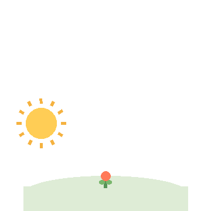
种下一颗种子
一节课也许改变不了全部，但一次真诚的陪伴，可能让孩子心里长出对未来的想象。
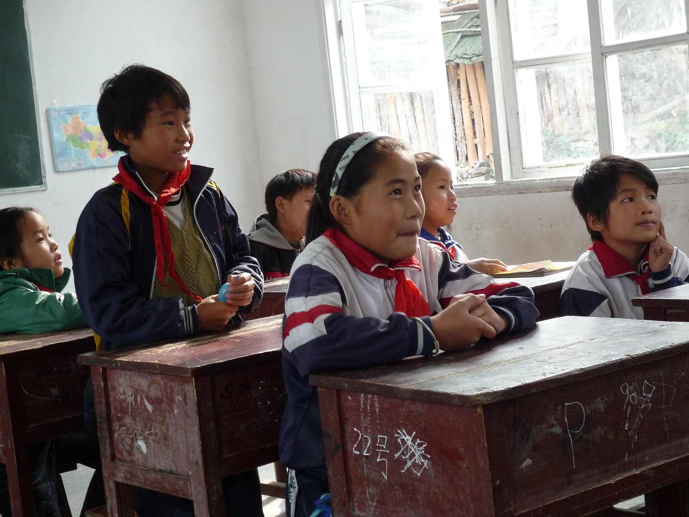
Weiguang Volunteer Teaching Project · 2019—
我们走进乡村小学，带去一堂课、一本书、一次被认真倾听的下午，也带回孩子眼里最干净的光。
“教育，是一棵树摇动另一棵树，—— 雅斯贝尔斯《什么是教育》
一朵云推动另一朵云，
一个灵魂唤醒另一个灵魂。”
01 关于项目 · ABOUT
我们相信，教育不是单向的“给予”，而是一场双向的照亮。微光虽小，也能照亮一段前行的路。
微光支教计划成立于 2019 年，由一群来自不同城市、不同职业的年轻人发起。
每年寒暑假，我们组织志愿者前往乡村小学，带去精心设计的阅读、科学、艺术与安全课程；也会长期与学校保持联系，持续为孩子们提供陪伴与支持。
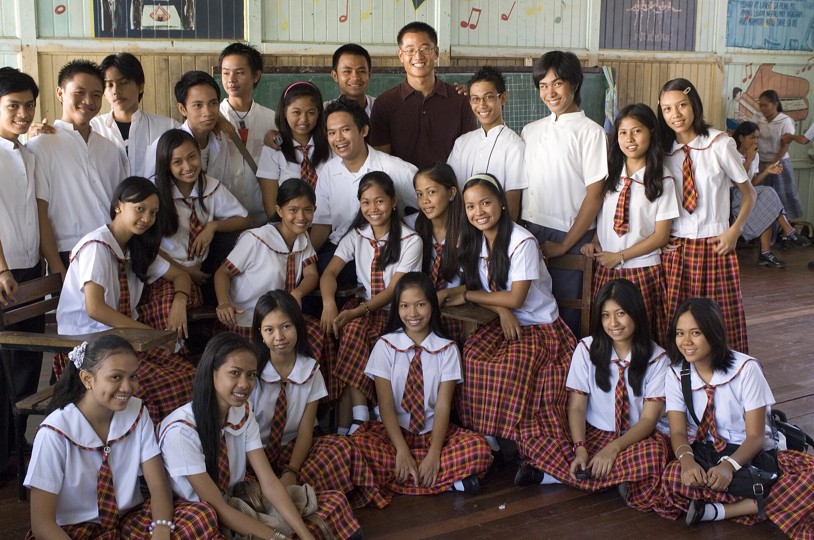
02 为什么支教 · WHY

一节课也许改变不了全部，但一次真诚的陪伴，可能让孩子心里长出对未来的想象。
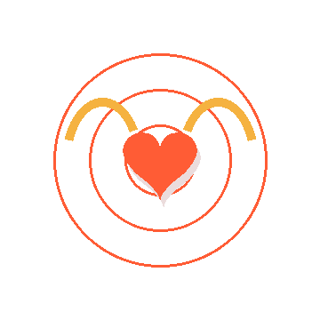
志愿者带来的不只是知识，也带着被孩子们治愈的勇气与温暖，我们共同成长。
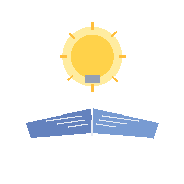
把科学、艺术与更大的世界带进课堂，让每个孩子相信：远方并不遥远。
03 课程体系 · COURSES
通过绘本共读、故事接龙和“给山外的我写一封信”，带孩子感受文字的力量，敢于表达自己。
用身边常见的材料做小实验，让抽象的物理、化学现象变得看得见、摸得着，点燃好奇心。
绘画、剪纸、黏土与拼贴，让孩子自由创作，也把家乡的一草一木变成作品里的风景。
唱歌、律动和团队游戏，让孩子们在奔跑与节奏中学会合作，也获得自信与快乐。
防溺水、交通安全与自我保护，用情景演练的方式，把重要的安全知识变得好记、好用。
倾听、分享与正向鼓励，帮助留守儿童认识情绪、表达感受，建立安全感和信任。
04 我们的成果 · IMPACT
截至 2026 年，我们的脚步仍在继续。每一份支持，都会变成孩子课桌上的一本书、一次实验，或一个被认真倾听的下午。
已筹集 68 套文具包，目标 100 套。
05 我们的足迹 · FOOTPRINT
6 名志愿者前往贵州织金，在锡群希望小学完成了首个 7 天支教营。
开始系统化课程设计，建立“阅读 + 科学 + 安全”三大核心模块。
新增甘肃、云南两地合作学校，志愿者团队扩大到 40 人。
启动“成长信箱”与学期内线上陪伴，让温暖不因支教结束而中断。
累计授课突破 1,000 课时，服务学生超过 3,000 名。
我们依然在路上。下一个出发季，期待与你同行。
06 影像记录 · GALLERY
照片来自 Wikimedia Commons（按各自 CC / Public domain 许可使用），点击可放大。
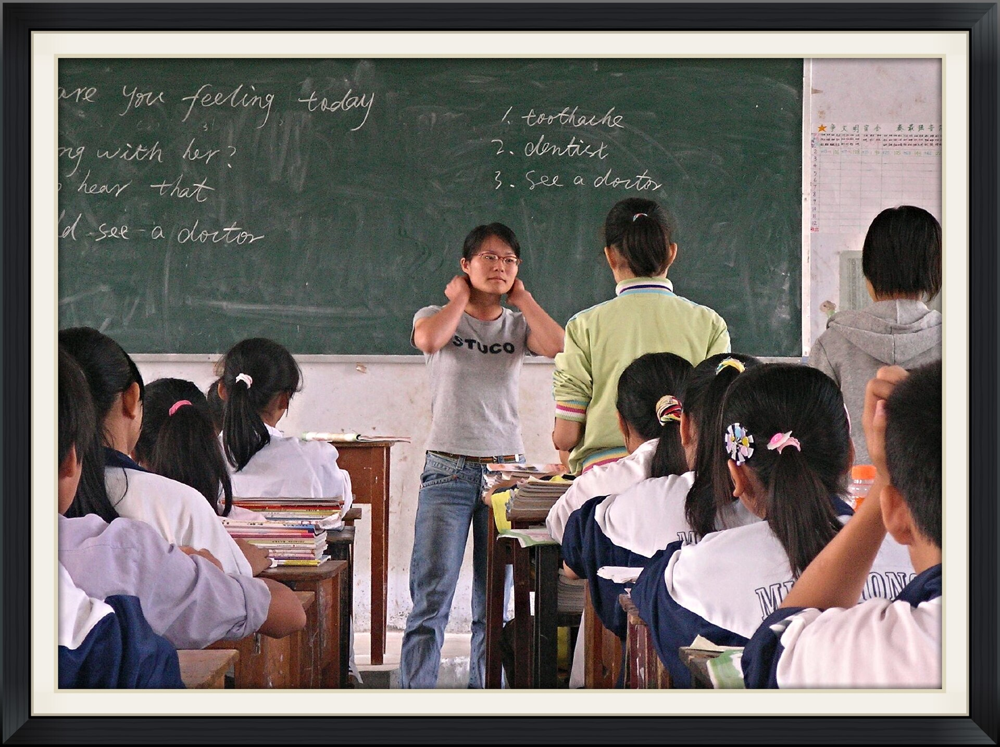
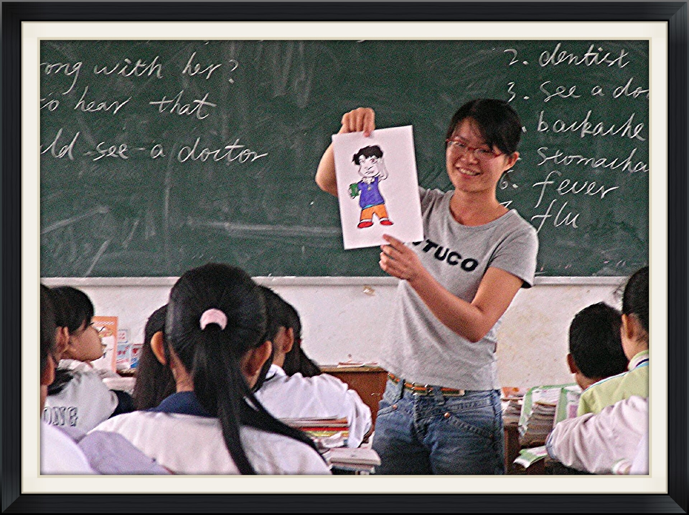
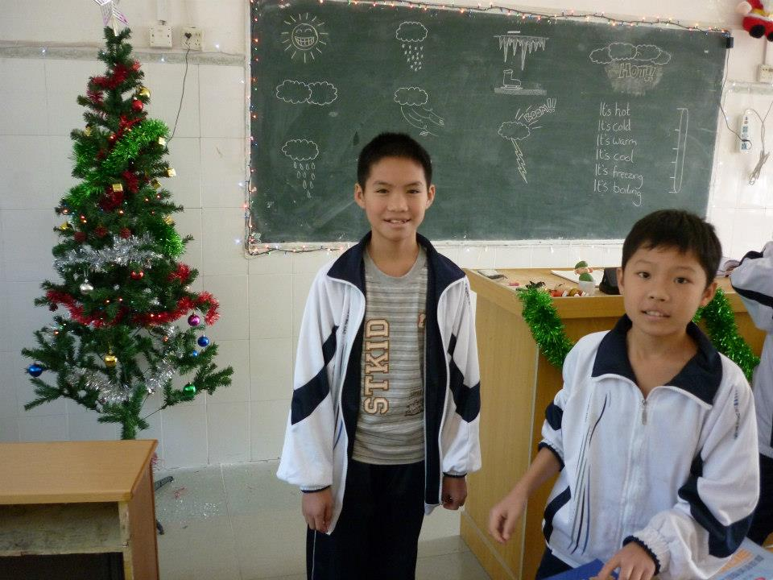
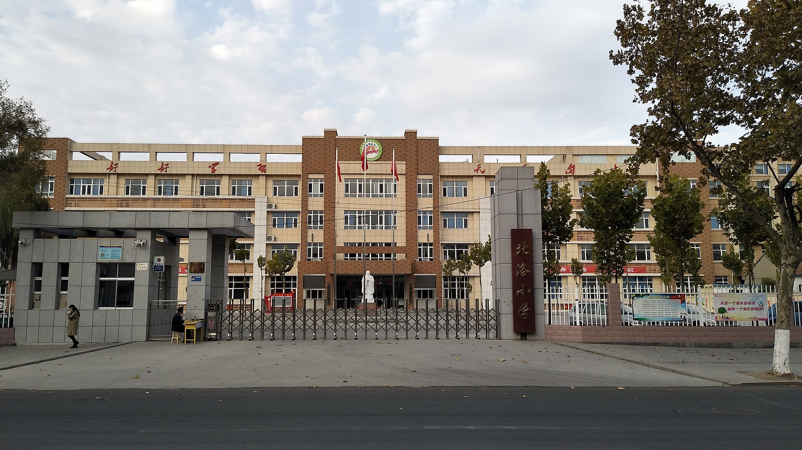
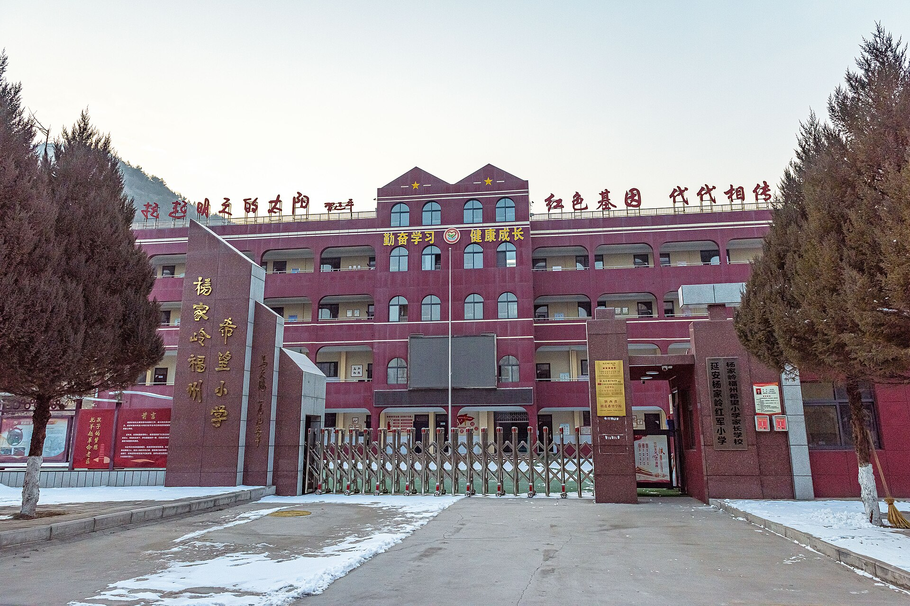
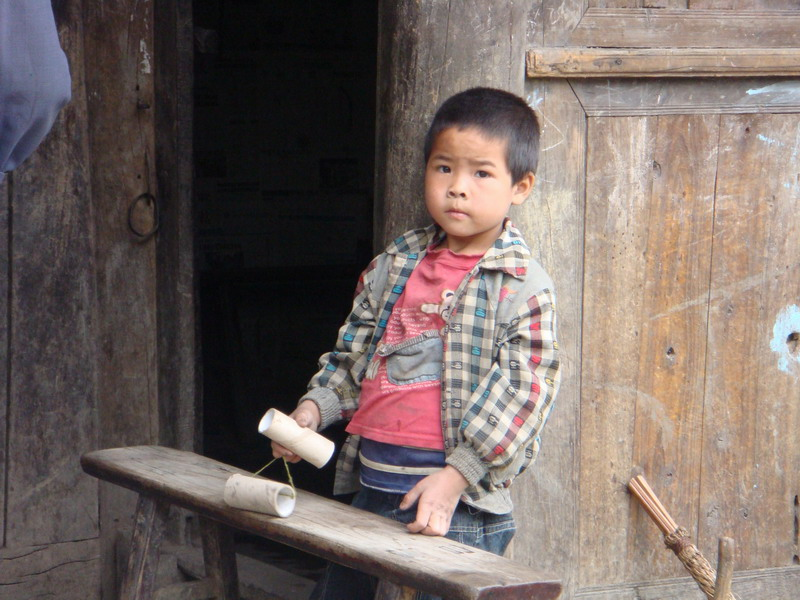
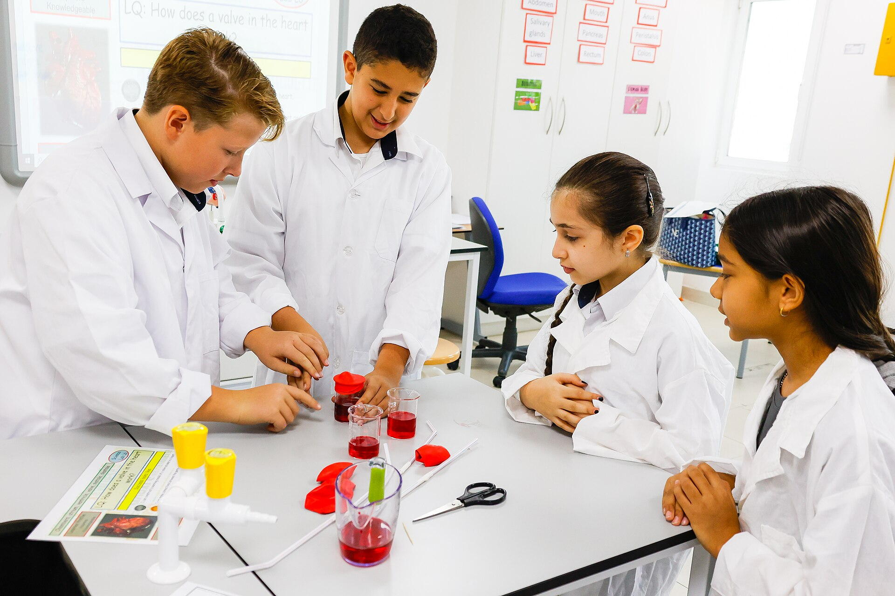
07 志愿者说 · VOICES
08 常见问题 · FAQ
完全可以。出发前我们会进行统一的课程培训与备课指导，并提供标准化教案。你需要的只是耐心和真诚。
常规支教营为 7–14 天，集中在寒暑假。此外还有学期内的线上陪伴项目，可根据你的时间灵活参与。
往返交通与基础食宿由项目统一安排并给予补贴；个人生活用品需自备。我们也会为志愿者购买保险。
你可以参与课程设计、宣传传播、物资捐赠或线上陪伴。每一份力量都很重要。
09 加入我们 · JOIN
无论你是能站上讲台的志愿者，还是愿意在幕后出力的伙伴，都欢迎你加入微光支教计划。